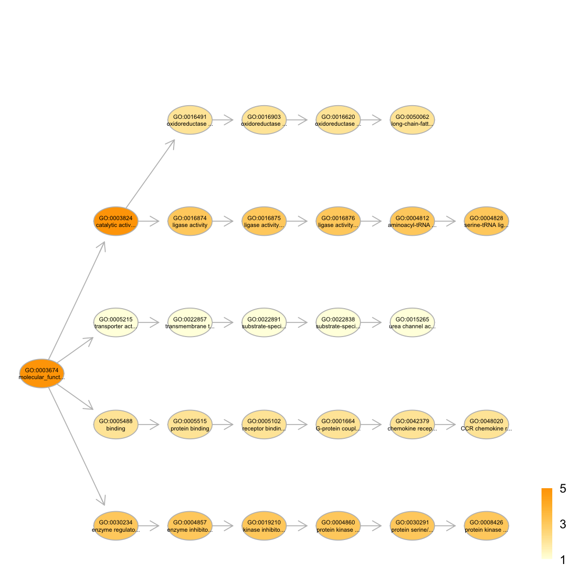

dDAGannotate is supposed to produce a subgraph
induced by the input annotation data, given a direct
acyclic graph (DAG; an ontology). The input is a graph of
"igraph" or "graphNET" object, a list of the vertices
containing annotation data, and the mode defining the paths
to the root of DAG. The induced subgraph contains vertices
(with annotation data) and their ancestors along with the
defined paths to the root of DAG. The annotations at these
vertices (including their ancestors) are also updated
according to the true-path rule: a gene annotated to a term
should also be annotated by its all ancestor terms.
dDAGannotate(g, annotations, path.mode = c("all_paths", "shortest_paths", "all_shortest_paths"),
verbose = TRUE)
subg: an induced subgraph, an object
of class "igraph". In addition to the original attributes
to nodes and edges, the return subgraph is also appended a
new node attribute called "annotations", which contains a
list of genes either as original annotations or inherited
annotations For the mode "shortest_paths", the induced subgraph is the most concise, and thus informative for visualisation when there are many nodes in query, while the mode "all_paths" results in the complete subgraph.
# 1) load GO Molelular Function as igraph object load(url("http://dnet.r-forge.r-project.org/data/Obo/ig.GOMF.RData")) g <- ig.GOMF # 2) load human genes annotated by GO Molelular Function terms load(url("http://dnet.r-forge.r-project.org/data/Hs/org.Hs.egGOMF.RData")) GS <- org.Hs.egGOMF # as 'GS' object # 3) prepare for annotation data # randomly select vertices with annotation data annotations <- GS$gs[sample(1:length(GS$gs),5)] # 4) obtain the induced subgraph # 4a) based on all possible paths (i.e. the complete subgraph induced) dDAGannotate(g, annotations, path.mode="all_paths", verbose=TRUE)At level 7, there are 3 nodes, and 3 incoming neighbors. At level 6, there are 3 nodes, and 3 incoming neighbors. At level 5, there are 4 nodes, and 4 incoming neighbors. At level 4, there are 5 nodes, and 3 incoming neighbors. At level 3, there are 3 nodes, and 3 incoming neighbors. At level 2, there are 3 nodes, and 1 incoming neighbors. At level 1, there are 1 nodes, and 0 incoming neighbors.IGRAPH DN-- 22 21 -- + attr: name (v/c), term_id (v/c), term_name (v/c), term_distance (v/n), annotations (v/x), relation (e/c)# 4b) based on shortest paths (i.e. the most concise subgraph induced) dag <- dDAGannotate(g, annotations, path.mode="shortest_paths", verbose=TRUE)At level 7, there are 3 nodes, and 3 incoming neighbors. At level 6, there are 3 nodes, and 3 incoming neighbors. At level 5, there are 4 nodes, and 4 incoming neighbors. At level 4, there are 5 nodes, and 3 incoming neighbors. At level 3, there are 3 nodes, and 3 incoming neighbors. At level 2, there are 3 nodes, and 1 incoming neighbors. At level 1, there are 1 nodes, and 0 incoming neighbors.# 5) color-code nodes/terms according to the number of annotations data <- sapply(V(dag)$annotations, length) names(data) <- V(dag)$name visDAG(g=dag, data=data, node.info="both")Attaching package: ‘graph’ The following objects are masked _by_ ‘package:igraph’: degree, edges 
dDAGinduce, dDAGlevel
Fang H, Gough J. (2014) DNET: dynamic networks via integrative analysis of digitised data in terms of network, ontology and evolution. R package version 1.0.0. http://dnet.r-forge.r-project.org
){kind=link}